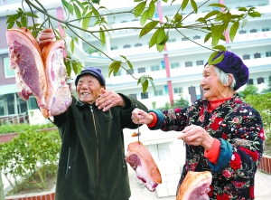

敬老院生活好 老人晚年无忧
发表日期：2013-03-05,08:49 来源：南充日报

打纸牌、打乒乓球、使用健身器材……3月1日，走进嘉陵区大观乡敬老院，在花园式的院坝内，敬老院的老人们正在参与各种娱乐活动。
“现在政策就是好呀，我们无儿无女，老了还能住上这么好的房子，天天吃得也好。”见到笔者，正和老伴任华英一起将腊肉挂到树枝上的五保老人陈廷轩笑着说。
今年90岁的陈廷轩和80岁的任华英是大观乡旧舍沟村村民，未到敬老院之前，老两口住的是建于上世纪五六十年代的一间破瓦房，每逢下雨天，屋里就漏水，难以安身。
陈廷轩带着笔者走进了老人们的公寓。这栋红白蓝三色相间的公寓有四层楼，有79名老人入住。
来到陈廷轩入住的房间，室内贴了地砖，阳光透进窗户，洒满房间的各个角落。这是一间双人标准间，房间内设有液晶电视机、衣橱柜和呼叫系统。
“早餐有稀饭、馒头、鸡蛋，中午两菜一汤，每天有肉吃，日子过得很舒服。”来到食堂外，陈廷轩指着外墙挂着的“一周菜谱”，念出上面罗列的菜品。
“今天我们采购了50公斤猪肉，200公斤大米……”听完负责敬老院生活的乡干部何勇的“汇报”，72岁的五保老人弋久成认真记录在购物清单上。随后，弋久成又和其他几位老人走进厨房，检查购买的食物是否新鲜、是否够分量。
弋久成是敬老院的“生活监督委员”，他的任务就是，确保政府每月给每位五保老人发放的300元生活费，都用到了老人身上。
“院里有自己的菜地、果园，还养了鸡、鹅、猪，吃都吃不完。”五保老人苏永清是敬老院的厨师，他笑着说，为满足集中供养的需要，乡政府在附近开辟了10亩土地，敬老院组织32名具有劳动能力的五保老人组成了生产组，种植蔬菜、建起果园、搞起了养殖，走出了一条“以园养园”之路。敬老院搞起了“人畜—沼气—蔬果”循环经济模式，该院的人畜粪便均进入沼气池，经过发酵后的沼液用来灌溉蔬菜，产出的沼气用来煮饭。去年，除满足自身需求外，该院共出售300多只鸡、10多头生猪，收入达3万多元。
“开饭了。”中午12时，79名老人纷纷带着餐具走进食堂，品尝起可口的农家滑肉、清炒白菜和豌豆尖清汤。“好耍不过敬老院，每天肉菜任你吃，三顿饭撑断裤腰带。”79岁的陈永和老人笑着说。
“多吃点，这个滑肉片比较嫩。”陈廷轩和任华英将可口的饭菜打回宿舍吃，习惯性地往对方碗里夹着菜。“搬进了敬老院，生活起居有人照顾；用上了自来水，洗衣服再不用跑到小河沟边上去了；吃饭不要钱、住房不要钱、看病不要钱，每月还能领到30元零花钱……这样的生活比蜜甜。”吃着可口的菜肴，陈廷轩、任华英脸上堆满了幸福的笑容。